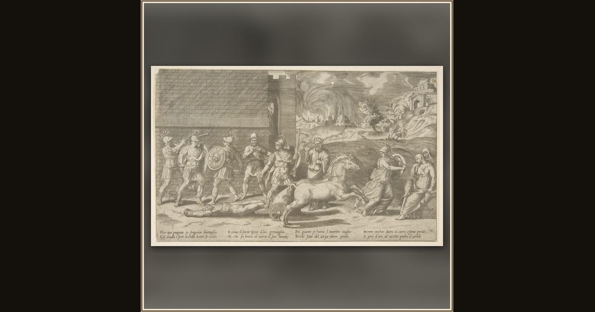

The combat of Hector and Achilles, and Achilles dragging the body of Hector around the walls of Troy
Giulio Bonasone · 1531–76 · met
An engraving of Achilles' combat with Hector and of Hector's body dragged behind the chariot below Troy's walls; Aristotle quotes Homer rebuking this wrath against senseless clay (2.3.16) Explore its place in Aristotle's Rhetoric, Book II, section 52.